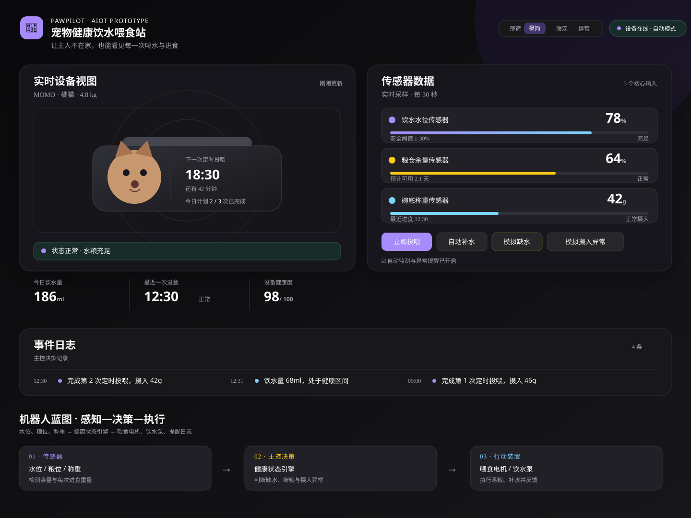
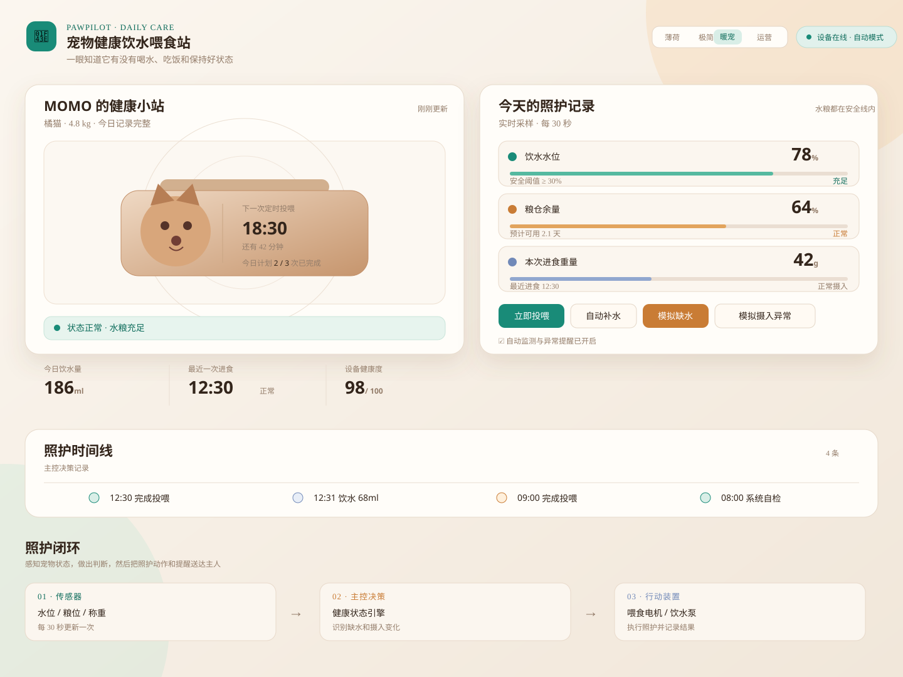
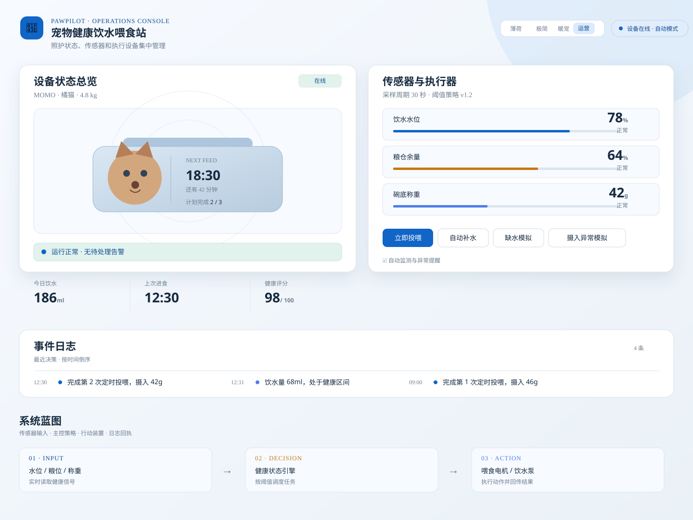

PawPilot · UI direction board
宠物健康饮水喂食站
三种风格候选
基于 GitHub 高星 UI 项目的共同方法做出的方向比较：信息优先、状态清晰、操作反馈即时。图中数据与原型页面保持一致。

极简深色
科技感优先借鉴 shadcn/ui 与 shadcn-admin：中性底色、窄边框和高对比状态，适合智能硬件控制台与大屏展示。

暖宠生活
已选 · 最终版保留数据层级，同时用暖色和宠物形象降低距离感，适合面向养宠家庭的 App、官网和课堂展示。

运营台白色
监控效率优先借鉴 Ant Design、MUI、Tabler 的运营台逻辑，强调扫描速度、告警优先级和持续监控。
参考项目：shadcn/ui、Ant Design、MUI、Tabler、Dashy。星数为检索时页面显示值，详见 参考说明。